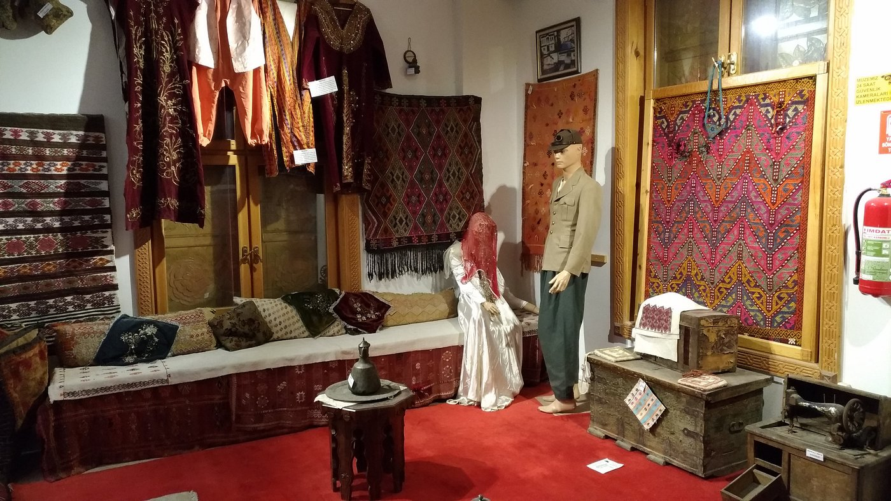
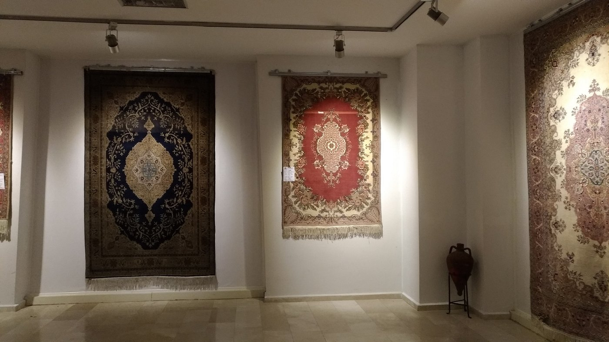
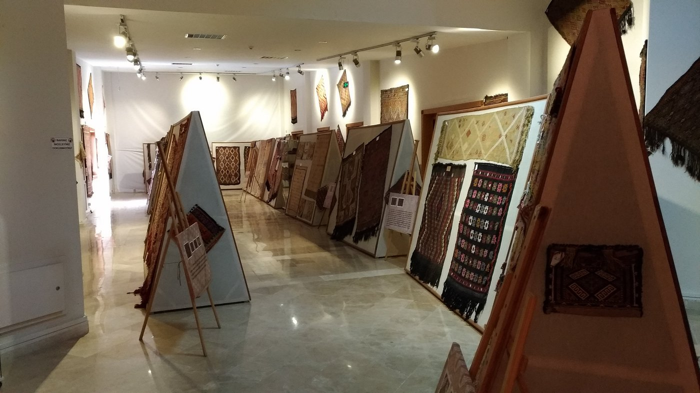

Prof. Dr. Turan Yazgan Halı ve Kilim Müzesi
Prof. Dr. Turan Yazgan 1938 Isparta ili Eğirdir ilçesi doğumlu akademisyen, yazar ve Türk Dünyası Araştırmaları Vakfı Kurucusudur. Müzemizde Selçuklu döneminden günümüze kadar devam eden örnekler sergilenmektedir. Etnografya Halı ve Kilim müzemiz 2013 yılından itibaren hizmet vermektedir. Dikey ve yatay olarak inşa edilen mimarisi ile dikkat çekiyor. Toplamda on katlı olup 3200 m2 alana sahiptir, onuncu kat seyir terası diğer katlar sergi alanı olarak kullanılmaktadır. Koleksiyonunda; Müzede yoğunluk Isparta Halıları olmak üzere, Lâdik, Döşeme altı, Kars, Avanos, Milas, Şirvan, Yahyalı, Taşpınar, Arapça duvar Halıları ve ayrıca Hereke kalitesinde dokunmuş portre halılar ve halı imalatında kullanılan Tezgâh, Kirkit, Makas, Halı bıçağı, Gülcan ve halı ipleri bulunmaktadır. Müzede 190 adet el dokuma halı sergilenmektedir. Halılar bir birinden farklı modellere sahiptir Madalyon, Köşe göbek, Serpme, Gülistan, Selçuklu motifleri, Has gül (üzümlü), Saat kapağı, mihraplı şeklinde motifler görülmektedir. Müzemizin birinci katında kilim dokumalara yer verilmiştir. Kilimler kendi içinde cicim, sumak, zili, gibi farklı dokuma teknikleri ile dokunmuştur. Şuan müzede 430 adet kilim sergilenmektedir. Kilimler üzerinde bütün motiflere rastlamak mümkün bunların yanı sıra kilim dokumasında kullanılan kilim tezgâhı, kirman, yün tarağı, kirkit, bıçak gibi ürünlerde sergilenmektedir. Düz dokumalar olarak yer yazgısı, sofra, yolluk, kuşak, heybe, çanta, çuval, yastık, minder gibi ürünler yer almaktadır. Müze de etnografik ürünlere de rastlamak mümkün kısaca bahsetmek gerekirse yöresel kıyafetler, eski bakır mutfak malzemeleri, tarım aletleri, eski ateşleyici silahlar, kesici aletler, eski dönem günlük yaşamda kullanılan araç ve gereçler, banknot ve madeni paralar gibi ürünleri görmek mümkün. Tüm bunların yanı sıra Isparta denilince akla ilk gelen Isparta Gülü ve Gül yağı üretiminde kullanılan imbik, damıtma sistemi, gül yağı şişeleri ve gül suyu saklama kapları sergilenmektedir. Genel olarak baktığımızda Prof. Dr. Turan Yazgan Etnografya Halı Kilim Müzesi ülkemizin Doğusundan Batısına kadar olan kültürel esintiyi günümüze yansıtmaktadır.


